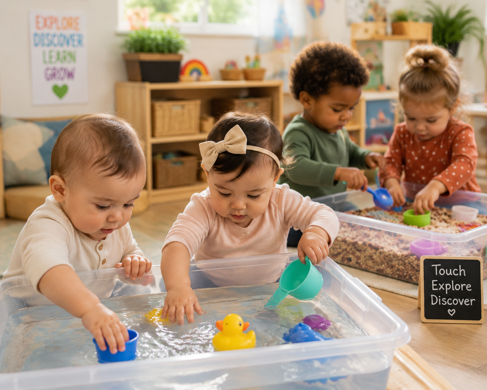

{kind=link}

0-12 Months
Texture Discovery Bags
Babies explore different textures through safe sensory bags filled with soft materials and interesting objects.
✋ Fine Motor
👀 Visual Tracking
Download →
Discover teacher-created sensory experiences designed for children from birth to 3 years. Explore hands-on activities that support curiosity, creativity, language development, fine motor skills, and early learning.


Children explore colors, textures, scooping, pouring, and early math concepts through a hands-on sensory experience.
Safe and simple sensory experiences designed for babies from birth through 12 months.
Babies explore different textures through safe sensory bags filled with soft materials and interesting objects.

Encourage listening, movement, and communication through safe sound exploration.

Children observe colors, movement, and cause-and-effect through visual sensory bottles.
Hands-on experiences that encourage independence, exploration, creativity, and problem solving.

Children scoop, sort, compare, and describe materials while building early thinking skills.

Children pour, measure, and experiment with water using classroom containers.

Explore leaves, sticks, rocks, and natural materials through outdoor discovery.
Simple classroom materials create endless opportunities for discovery, creativity, and learning.
Pouring, scooping, floating, sinking, and measuring experiences.
Leaves, rocks, sticks, flowers, and outdoor discoveries.
Rice, fabric, cotton, sand, and materials children can explore.
Music, movement, and sound exploration activities.
Sensory play supports every area of early childhood development.
Children investigate cause and effect, make predictions, compare materials, and solve problems.
Children build vocabulary by describing textures, sounds, colors, and experiences.
Scooping, squeezing, grasping, and pouring strengthen fine motor development.
Sensory activities encourage confidence, independence, and exploration.
Download additional classroom resources to support planning, documentation, and family engagement.
{kind=link}
{kind=link}
{kind=link}